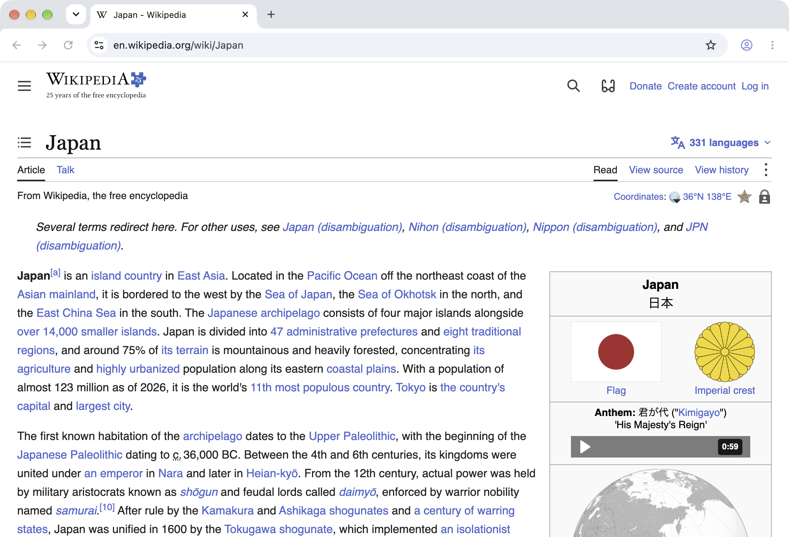
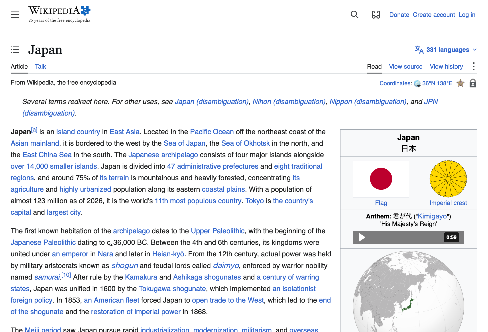

<!doctype html>
<html lang="en">
<meta charset="utf-8">
<meta name="viewport" content="width=device-width, initial-scale=1">
<title>browse and Chrome — the same page</title>
<style>
  * { box-sizing: border-box; }
  html, body { margin: 0; width: 100%; height: 100%; overflow: hidden; }
  body {
    padding: 60px 56px;
    font-family: -apple-system, BlinkMacSystemFont, sans-serif;
    color: #263041;
    background: #cad3e3 url("quiet-wallpaper-v1.png") center / cover no-repeat;
  }
  h1 { margin: 0 0 12px; font-size: 36px; letter-spacing: -1.2px; font-weight: 600; }
  header p { margin: 0; font-size: 18px; color: #465064; }
  main { display: grid; grid-template-columns: 1fr 1fr; gap: 40px; margin-top: 44px; }
  figure { margin: 0; min-width: 0; }
  figcaption { display: flex; align-items: baseline; gap: 12px; margin-bottom: 14px; }
  strong { font-size: 22px; font-weight: 600; }
  span { font-size: 16px; color: #465064; }
  img { width: 100%; height: auto; display: block; border-radius: 10px; box-shadow: 0 18px 44px rgb(27 37 61 / 24%); }
</style>
<header>
  <h1>The same page. A quieter window.</h1>
  <p>Wikipedia in two 1100 × 750-point windows, captured on the same Mac.</p>
</header>
<main>
  <figure>
    <figcaption><strong>Chrome</strong><span>Standard window</span></figcaption>
    
  </figure>
  <figure>
    <figcaption><strong>browse</strong><span>Tab bar hidden with ⌘S</span></figcaption>
    
  </figure>
</main>
</html>
